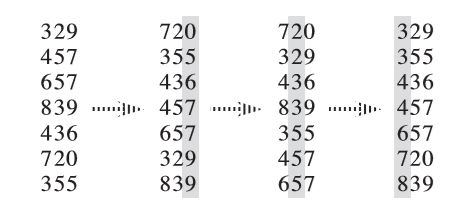

Radix sort
Warning
本页面要介绍的不是 计数排序
本页面将简要介绍基数排序。
简介
基数排序（英语：Radix sort）是一种非比较型的排序算法，最早用于解决卡片排序的问题。
它的工作原理是将待排序的元素拆分为 k k k-1 k-2

基数排序需要借助一种 稳定算法 完成内层对关键字的排序。
通常而言，基数排序比基于比较的排序算法（比如快速排序）要快。但由于需要额外的内存空间，因此当内存空间稀缺时，原地置换算法（比如快速排序）或许是个更好的选择。
基数排序的正确性可以参考 《算法导论（第三版）》第 8.3-3 题的解法 或自行理解。
性质
稳定性
基数排序是一种稳定的排序算法。
时间复杂度
一般来说，如果每个关键字的值域都不大，就可以使用 计数排序 作为内层排序，此时的复杂度为 O(kn+\sum\limits_{i=1}^k w_i) w_i i O(nk\log n)
空间复杂度
基数排序的空间复杂度为 O(k+n)
算法实现
伪代码
\begin{array}{ll}
1 & \textbf{Input. } \text{An array } A \text{ consisting of }n\text{ elements, where each element has }k\text{ keys.}\\
2 & \textbf{Output. } \text{Array }A\text{ will be sorted in nondecreasing order stably.} \\
3 & \textbf{Method. } \\
4 & \textbf{for }i\gets k\textbf{ down to }1\\
5 & \qquad\text{sort }A\text{ into nondecreasing order by the }i\text{-th key stably}
\end{array}
C++
1
2
3
4
5
6
7
8
9
10
11
12
13
14
15
16
17
18
19
20
21
22
23
24
25
26
27
28
29
30
31
32
33
34
35 const int N = 100010 ; const int W = 100010 ; const int K = 100 ; int n , w [ K ], k , cnt [ W ]; struct Element { int key [ K ]; bool operator < ( const Element & y ) const { // 两个元素的比较流程
for ( int i = 1 ; i <= k ; ++ i ) { if ( key [ i ] == y . key [ i ]) continue ; return key [ i ] < y . key [ i ]; } return false ; } } a [ N ], b [ N ]; void counting_sort ( int p ) { memset ( cnt , 0 , sizeof ( cnt )); for ( int i = 1 ; i <= n ; ++ i ) ++ cnt [ a [ i ]. key [ p ]]; for ( int i = 1 ; i <= w [ p ]; ++ i ) cnt [ i ] += cnt [ i - 1 ]; // 为保证排序的稳定性，此处循环i应从n到1
// 即当两元素关键字的值相同时，原先排在后面的元素在排序后仍应排在后面
for ( int i = n ; i >= 1 ; -- i ) b [ cnt [ a [ i ]. key [ p ]] -- ] = a [ i ]; memcpy ( a , b , sizeof ( a )); } void radix_sort () { for ( int i = k ; i >= 1 ; -- i ) { // 借助计数排序完成对关键字的排序
counting_sort ( i ); } }
实际上并非必须从后往前枚举才是稳定排序，只需对 cnt 数组进行等价于 std::exclusive_scan 的操作即可。
例题 洛谷 P1177 【模板】快速排序
给出 n
1
2
3
4
5
6
7
8
9
10
11
12
13
14
15
16
17
18
19
20
21
22
23
24
25
26
27
28
29
30
31
32
33
34
35 #include <algorithm> #include <iostream> #include <utility> void radix_sort ( int n , int a []) { int * b = new int [ n ]; // 临时空间
int * cnt = new int [ 1 << 8 ]; int mask = ( 1 << 8 ) - 1 ; int * x = a , * y = b ; for ( int i = 0 ; i < 32 ; i += 8 ) { for ( int j = 0 ; j != ( 1 << 8 ); ++ j ) cnt [ j ] = 0 ; for ( int j = 0 ; j != n ; ++ j ) ++ cnt [ x [ j ] >> i & mask ]; for ( int sum = 0 , j = 0 ; j != ( 1 << 8 ); ++ j ) { // 等价于 std::exclusive_scan(cnt, cnt + (1 << 8), cnt, 0);
sum += cnt [ j ], cnt [ j ] = sum - cnt [ j ]; } for ( int j = 0 ; j != n ; ++ j ) y [ cnt [ x [ j ] >> i & mask ] ++ ] = x [ j ]; std :: swap ( x , y ); } delete [] cnt ; delete [] b ; } int main () { std :: ios :: sync_with_stdio ( false ); std :: cin . tie ( 0 ); int n ; std :: cin >> n ; int * a = new int [ n ]; for ( int i = 0 ; i < n ; ++ i ) std :: cin >> a [ i ]; radix_sort ( n , a ); for ( int i = 0 ; i < n ; ++ i ) std :: cout << a [ i ] << ' ' ; delete [] a ; return 0 ; }
参考资料与注释
build 本页面最近更新：更新历史 edit 发现错误？想一起完善？ 在 GitHub 上编辑此页！ people 本页面贡献者：OI-wiki copyright 本页面的全部内容在 CC BY-SA 4.0 和 SATA